Project Showcase
Generated on: 2026-08-30
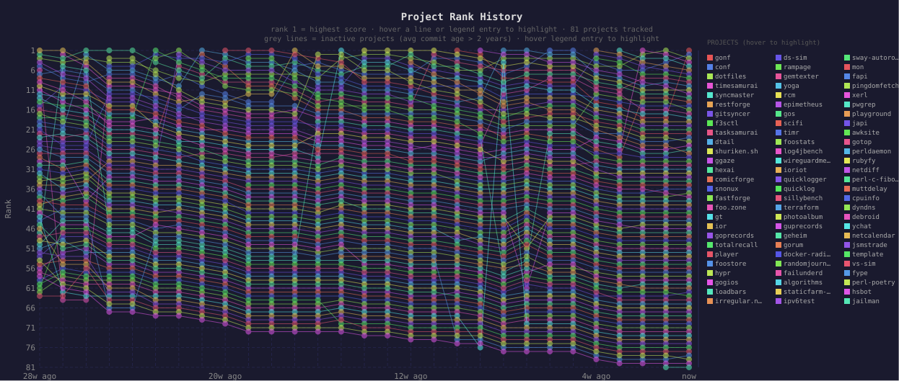
This page showcases my side projects, providing an overview of what each project does, its technical implementation, and key metrics. Each project summary includes information about the programming languages used, development activity, releases, and licensing. The projects are ranked by score, which combines recent activity, project size, tag history, and whether the project has shipped a release.
Table of Contents
Overall Statistics
- 📦 Total Projects: 80
- 📊 Total Commits: 15,018
- 📈 Total Lines of Code: 819,133
- 📄 Total Lines of Documentation: 309,411
- 💻 Languages: Go (49.1%), Java (7.3%), Shell (7.0%), C (6.8%), Dart (5.7%), C++ (4.6%), C/C++ (2.9%), XML (2.8%), JavaScript (2.6%), YAML (2.4%), Perl (1.8%), JSON (1.4%), HTML (0.9%), CSS (0.9%), TypeScript (0.9%), Ruby (0.9%), Config (0.6%), Python (0.3%), HCL (0.3%), Make (0.3%)
- 📚 Documentation: Text (72.5%), Markdown (26.4%), LaTeX (1.1%)
- 🚀 Release Status: 45 released, 35 experimental (56.2% with releases, 43.8% experimental)
Projects
1. syncmaster
- 💻 Languages: Go (100.0%)
- 📚 Documentation: Markdown (100.0%)
- 📊 Commits: 34
- 📈 Lines of Code: 7342
- 📄 Lines of Documentation: 645
- 🏷️ Tags: 7
- 📅 Development Period: 2026-08-24 to 2026-08-27
- 🏆 Score: 99.7 (combines recent activity, code size, tags, and release status)
- ⚖️ License: Custom License
- 🏷️ Latest Release: v0.4.0 (2026-08-27)
Import files from supported USB devices mounted through GVFS — Fujifilm
cameras and Supernote Nomad — with geotagging and .note→PDF conversion.
View on GitHub
---
2. restforge
- 💻 Languages: Go (46.2%), Dart (30.9%), JavaScript (15.6%), C (3.4%), C/C++ (1.1%), Python (0.6%), Shell (0.6%), CMake (0.5%), C++ (0.4%), XML (0.3%), Kotlin (0.2%), YAML (0.2%)
- 📚 Documentation: Markdown (100.0%)
- 📊 Commits: 94
- 📈 Lines of Code: 47352
- 📄 Lines of Documentation: 3190
- 🏷️ Tags: 2
- 📅 Development Period: 2026-08-08 to 2026-08-19
- 🏆 Score: 48.6 (combines recent activity, code size, tags, and release status)
- ⚖️ License: MIT
- 🏷️ Latest Release: v0.6.1 (2026-08-19)
RESTForge is a generic hypermedia browser for [Siren](https://github.com/kevinswiber/siren)-formatted REST APIs, built three times over — as a Pebble smartwatch app (C/ES5), an Android/Flutter app (Dart), and a Go terminal client with both a Bubble Tea TUI and scriptable one-shot subcommands. Rather than being written against a specific API, each client fetches a root document and renders whatever properties, sub-entities, links, and actions the server describes; following a link fetches it, and triggering an action (after a confirmation step) performs it and then unconditionally re-fetches the document to show the resulting state, polling if the work is still in progress. This makes the tool broadly reusable: because navigation is always "follow the href the server provided" rather than URL construction, none of the three codebases contains server-specific vocabulary — a property enforced by a genericity grep in just check.
Architecturally, the three implementations share no code but are held to one written contract in docs/DESIGN.md, covering invariants like: a failed request must never be confused with or overwrite a successful "no" response; rendering never reinterprets server values (e.g., collapsing false into "off"); any non-safe HTTP method (per RFC 9110) requires explicit confirmation; state is never carried across an action (a 409 triggers re-fetch, not retry); required fields are never defaulted or invented; and in-progress jobs are tracked carefully so a stale or misrouted poll is never mistaken for completion. Each app has its own Justfile and AGENTS.md/README describing its module layout, while the root Justfile forwards commands to all three and runs the cross-cutting checks (secret scanning, genericity grep, and each app's own test/check suite).
View on GitHub
---
3. gitsyncer
- 💻 Languages: Go (96.6%), Shell (3.3%), JSON (0.2%)
- 📚 Documentation: Markdown (100.0%)
- 📊 Commits: 261
- 📈 Lines of Code: 22735
- 📄 Lines of Documentation: 2575
- 🏷️ Tags: 48
- 📅 Development Period: 2025-06-23 to 2026-08-15
- 🏆 Score: 37.0 (combines recent activity, code size, tags, and release status)
- ⚖️ License: BSD-2-Clause
- 🏷️ Latest Release: v0.19.3 (2026-08-15)
GitSyncer is a tool for synchronizing git repositories between multiple organizations (e.g., GitHub and Codeberg). It automatically keeps all branches in sync across different git hosting platforms.
View on GitHub
---
4. f3sctl
- 💻 Languages: Go (98.2%), JavaScript (1.8%)
- 📚 Documentation: Markdown (100.0%)
- 📊 Commits: 88
- 📈 Lines of Code: 16901
- 📄 Lines of Documentation: 1245
- 🏷️ Tags: 12
- 📅 Development Period: 2026-08-08 to 2026-08-17
- 🏆 Score: 31.5 (combines recent activity, code size, tags, and release status)
- ⚖️ License: No license found
- 🏷️ Latest Release: v0.6.1 (2026-08-17)
f3sctl is a control tool for a FreeBSD-based homelab ("f3s"), managing power for four bhyve hosts (f0–f3) and a rack fan controller, either from the shell or through an HTTP API. It replaces an old bash script and is useful because it turns "power the homelab on/off" into a safe, ordered, scriptable operation — unmounting NFS, exporting a removable ZFS pool, muting alerts, stopping CARP failover daemons, and shutting down guests/hosts in the right sequence with a two-minute confirmation check — rather than just sending a shutdown signal and hoping.
Architecturally it's a single Go binary that behaves as three different programs depending on context: a CLI on regular machines, a CGI script under bozohttpd when GATEWAY_INTERFACE is set (serving a self-describing Siren hypermedia API on the two Raspberry Pi nodes), and a restricted SSH ForceCommand agent on the f-hosts themselves that accepts only a handful of fixed verbs. Keeping all three modes in one binary means the API and CLI can never disagree about what an action does — the API literally shells out to f3sctl power off. Security is enforced through SSH key restrictions (from=, ForceCommand, single-word verb allowlist) and doas argv pinning rather than broad privilege, and two API nodes coordinate via a peer-check so load-balanced requests can't start conflicting jobs.
View on GitHub
---
5. dotfiles
- 💻 Languages: Shell (76.4%), Config (6.3%), TOML (5.6%), CSS (5.4%), Python (2.9%), JSON (2.8%), Ruby (0.5%)
- 📚 Documentation: Markdown (100.0%)
- 📊 Commits: 1202
- 📈 Lines of Code: 6081
- 📄 Lines of Documentation: 20248
- 🏷️ Tags: 0
- 📅 Development Period: 2023-07-30 to 2026-08-30
- 🏆 Score: 22.8 (combines recent activity, code size, tags, and release status)
- ⚖️ License: No license found
- 🧪 Status: Experimental (no releases yet)
These are all my dotfiles. I can install them locally on my laptop and/or workstation as well as remotely on any server.
View on Codeberg
View on GitHub
---
6. conf
- 💻 Languages: YAML (74.0%), Shell (12.6%), Perl (7.4%), Python (2.6%), Make (1.5%), JSON (0.5%), Docker (0.5%), Config (0.3%), TOML (0.2%), Ruby (0.2%), HTML (0.1%)
- 📚 Documentation: Markdown (97.8%), Text (2.2%)
- 📊 Commits: 1088
- 📈 Lines of Code: 25665
- 📄 Lines of Documentation: 8797
- 🏷️ Tags: 0
- 📅 Development Period: 2021-12-28 to 2026-08-20
- 🏆 Score: 20.5 (combines recent activity, code size, tags, and release status)
- ⚖️ License: No license found
- 🧪 Status: Experimental (no releases yet)
This is my personal config repository. Including...
View on Codeberg
View on GitHub
---
7. ggaze
- 💻 Languages: C (91.8%), C/C++ (7.3%), XML (0.5%), Python (0.3%)
- 📚 Documentation: Markdown (95.7%), Text (4.3%)
- 📊 Commits: 167
- 📈 Lines of Code: 30780
- 📄 Lines of Documentation: 2919
- 🏷️ Tags: 1
- 📅 Development Period: 2026-07-12 to 2026-08-11
- 🏆 Score: 16.8 (combines recent activity, code size, tags, and release status)
- ⚖️ License: GPL-3.0
- 🧪 Status: Experimental (no releases yet)
**ggaze (GNOME Gaze)** is a small, fast, native GTK4 image viewer written in C for Fedora Linux, designed to quickly preview a folder of camera downloads, cull rejects, and move on — think feh/nsxiv/qiv but GNOME-native and KISS (no library, database, or sidecars). Its workflow pairs a gthumb-style thumbnail grid with a full-window large view, plus rich keyboard-driven actions: navigation, zoom/pan, EXIF info overlay, mark/select, trash (with undo) or permanent delete, configurable move destinations, external program launchers, shell-script runners, optional GEGL quick-enhance and crop/straighten/rotate, clipboard copy, fullscreen, and slideshow.
**Architecture:** A meson/ninja C project built on GTK4 + libadwaita + GLib, with a strict main-thread-touches-GTK / decode-in-GTask-threads split and a "one active load per window, last-write-wins" invariant backed by a bounded GdkTexture LRU. Plain-C modules (navigator, loader, detect, thumbnail, trash, mover, opener, runner, enhancer, info, texturecache, clipboard) are display-free and unit-tested standalone; GTK widgets live in app, window, viewer, gridview, and shortcuts. Decode backends are pluggable behind GGAZE_HAVE_* guards (pixbuf default; optional gegl, jxl, avif, heif as meson features), so a minimal GdkPixbuf-only build stays valid and fast. Testing is two mandatory tracks (unit ≥80% coverage via gcov for plain-C modules; integration suites for cross-module flows with offscreen GTK and real temp dirs), plus an ASan/UBSan leak-check pass after every milestone.
View on GitHub
---
8. dtail
- 💻 Languages: Go (95.2%), Shell (2.3%), JSON (1.0%), C (0.7%), Make (0.5%), C/C++ (0.1%)
- 📚 Documentation: Text (97.9%), Markdown (2.1%)
- 📊 Commits: 784
- 📈 Lines of Code: 56634
- 📄 Lines of Documentation: 220971
- 🏷️ Tags: 27
- 📅 Development Period: 2020-01-09 to 2026-07-18
- 🏆 Score: 14.0 (combines recent activity, code size, tags, and release status)
- ⚖️ License: Apache-2.0
- 🏷️ Latest Release: v4.3.3 (2024-08-23)
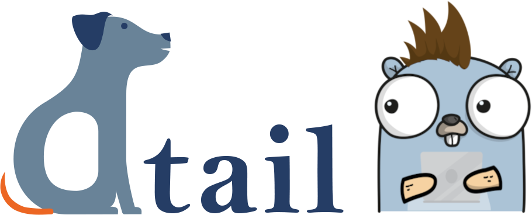
DTail (a distributed tail program) is a DevOps tool for engineers programmed in Google Go for following (tailing), catting and grepping (including gzip and zstd decompression support) log files on many machines concurrently. An advanced feature of DTail is to execute distributed MapReduce aggregations across many devices.
View on GitHub
---
9. shuriken.sh
- 💻 Languages: Shell (99.0%), Config (0.4%), Perl (0.4%), Docker (0.1%), XML (0.1%)
- 📚 Documentation: Markdown (100.0%)
- 📊 Commits: 363
- 📈 Lines of Code: 24256
- 📄 Lines of Documentation: 951
- 🏷️ Tags: 36
- 📅 Development Period: 2011-11-19 to 2026-08-04
- 🏆 Score: 13.4 (combines recent activity, code size, tags, and release status)
- ⚖️ License: No license found
- 🏷️ Latest Release: v0.14.1 (2026-08-04)
shuriken is a Bash script for Unix like operating systems (such as Linux) to generate static web photo albums.
The resulting static photo album is pure HTML+CSS (without any JavaScript!).
View on GitHub
---
10. hexai
- 💻 Languages: Go (100.0%)
- 📚 Documentation: Markdown (100.0%)
- 📊 Commits: 564
- 📈 Lines of Code: 48388
- 📄 Lines of Documentation: 3894
- 🏷️ Tags: 107
- 📅 Development Period: 2025-08-01 to 2026-08-09
- 🏆 Score: 10.7 (combines recent activity, code size, tags, and release status)
- ⚖️ License: No license found
- 🏷️ Latest Release: v0.42.0 (2026-07-02)
Hexai, the AI addition for your Helix Editor (https://helix-editor.com) .. Other editors should work but weren't tested.
View on GitHub
---
11. tasksamurai
- 💻 Languages: Go (99.9%)
- 📚 Documentation: Markdown (100.0%)
- 📊 Commits: 343
- 📈 Lines of Code: 15859
- 📄 Lines of Documentation: 265
- 🏷️ Tags: 26
- 📅 Development Period: 2025-06-19 to 2026-07-19
- 🏆 Score: 9.9 (combines recent activity, code size, tags, and release status)
- ⚖️ License: BSD-2-Clause
- 🏷️ Latest Release: v0.18.3 (2026-07-19)
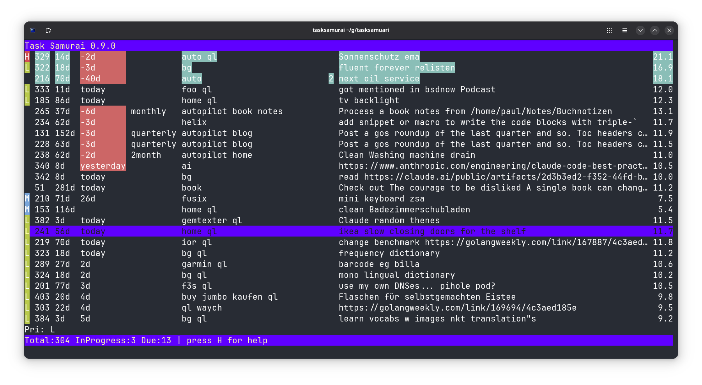
Task Samurai invokes the task command to read and modify tasks. The tasks are displayed in a Bubble Tea table where each row represents a task. Hotkeys trigger Taskwarrior commands such as starting, completing or annotating tasks. The UI refreshes automatically after each action so the table is always up to date.
View on GitHub
---
12. foo.zone
- 💻 Languages: XML (98.4%), Shell (1.3%), Go (0.3%)
- 📚 Documentation: Text (86.4%), Markdown (13.6%)
- 📊 Commits: 1860
- 📈 Lines of Code: 21604
- 📄 Lines of Documentation: 176
- 🏷️ Tags: 0
- 📅 Development Period: 2021-04-29 to 2026-08-04
- 🏆 Score: 7.0 (combines recent activity, code size, tags, and release status)
- ⚖️ License: No license found
- 🧪 Status: Experimental (no releases yet)
Each format is in it's own branch in this repository. E.g.:
View on Codeberg
View on GitHub
---
13. fastforge
- 💻 Languages: C (94.7%), C/C++ (3.8%), JavaScript (0.8%), Make (0.7%)
- 📚 Documentation: Markdown (100.0%)
- 📊 Commits: 107
- 📈 Lines of Code: 4731
- 📄 Lines of Documentation: 271
- 🏷️ Tags: 7
- 📅 Development Period: 2026-04-06 to 2026-08-16
- 🏆 Score: 6.9 (combines recent activity, code size, tags, and release status)
- ⚖️ License: MIT
- 🏷️ Latest Release: v1.4.0 (2026-08-14)
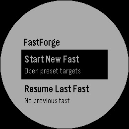
FastForge is a Pebble watchapp for intermittent fasting tracking, built with the Rebble SDK.
View on GitHub
---
14. snonux
- 💻 Languages: JSON (35.8%), JavaScript (28.4%), Go (23.3%), CSS (12.6%)
- 📚 Documentation: Text (80.4%), Markdown (19.6%)
- 📊 Commits: 125
- 📈 Lines of Code: 24302
- 📄 Lines of Documentation: 1174
- 🏷️ Tags: 33
- 📅 Development Period: 2026-04-06 to 2026-08-02
- 🏆 Score: 6.7 (combines recent activity, code size, tags, and release status)
- ⚖️ License: MIT
- 🏷️ Latest Release: v0.19.3 (2026-08-02)
**WIP** - A microblog generator project
View on GitHub
---
15. gonf
- 💻 Languages: Go (100.0%)
- 📚 Documentation: Markdown (99.3%), Text (0.7%)
- 📊 Commits: 28
- 📈 Lines of Code: 3373
- 📄 Lines of Documentation: 136
- 🏷️ Tags: 0
- 📅 Development Period: 2026-07-04 to 2026-07-09
- 🏆 Score: 6.2 (combines recent activity, code size, tags, and release status)
- ⚖️ License: No license found
- 🧪 Status: Experimental (no releases yet)
**gonf** is a pure-Go, KISS-style configuration-management tool in the spirit of Puppet/Chef but written entirely in Go with no external DSL or runtime. You declare desired system state directly in Go using a small, declarative API — File, Dir, Link, Package (and their No*/IsAbsent counterparts) — passing functional options like WithContent, WithMode, WithSource, WithPrune, IsLatest, etc. A single api.Apply() then reconciles every declared resource against the actual filesystem/package state.
Architecturally it's a clean three-layer design: a public api package exposes the resource constructors and Apply entry point; an internal/resource package provides a thread-safe **repository** that registers resources by unique ID and topologically sorts them (with circular-dependency detection) before invoking each resource's Applier; and per-type packages (file, dir, link, pkg) implement the concrete reconciliation logic. Options are decoupled from resources via small capability interfaces (Moded, Sourced, Contented, Prunable, Latestable, Linkable, …), so new resource types or options can be added without touching existing code. A cmd/gonf binary wires it together and currently runs an examples configuration as a demonstration.
View on Codeberg
View on GitHub
---
16. gt
- 💻 Languages: Go (97.7%), Shell (2.0%), YAML (0.3%)
- 📚 Documentation: Markdown (100.0%)
- 📊 Commits: 413
- 📈 Lines of Code: 19759
- 📄 Lines of Documentation: 4351
- 🏷️ Tags: 7
- 📅 Development Period: 2025-11-25 to 2026-05-25
- 🏆 Score: 6.1 (combines recent activity, code size, tags, and release status)
- ⚖️ License: MIT
- 🏷️ Latest Release: v0.5.1 (2026-05-25)
A simple AI-engineered command-line percentage calculator written in Go. No frontier AI models from Claude, OpenAI, Google, ec, were used for this project. The ones used were:
View on GitHub
---
17. ior
- 💻 Languages: Go (90.2%), C (8.9%), Shell (0.4%), JSON (0.2%), C/C++ (0.2%), Docker (0.1%)
- 📚 Documentation: Markdown (83.9%), Text (16.1%)
- 📊 Commits: 848
- 📈 Lines of Code: 66290
- 📄 Lines of Documentation: 3008
- 🏷️ Tags: 3
- 📅 Development Period: 2024-01-18 to 2026-05-14
- 🏆 Score: 5.5 (combines recent activity, code size, tags, and release status)
- ⚖️ License: No license found
- 🏷️ Latest Release: v1.1.0 (2026-05-14)
**🚧 PRE-ALPHA SOFTWARE:** This project is in a pre-alpha state and is intended for my own personal use only. Use at your own risk.
View on GitHub
---
18. goprecords
- 💻 Languages: Go (97.8%), Shell (2.0%), Docker (0.2%)
- 📚 Documentation: Markdown (100.0%)
- 📊 Commits: 173
- 📈 Lines of Code: 8303
- 📄 Lines of Documentation: 1075
- 🏷️ Tags: 18
- 📅 Development Period: 2013-03-22 to 2026-08-13
- 🏆 Score: 5.1 (combines recent activity, code size, tags, and release status)
- ⚖️ License: No license found
- 🏷️ Latest Release: v0.6.0 (2026-08-13)
goprecords is a Go command-line program that generates uptime reports for hosts based on the input record files from uptimed. It supports importing records into SQLite and querying for reports, or reporting directly from a stats directory.
View on GitHub
---
19. totalrecall
- 💻 Languages: Go (98.8%), HTML (0.4%), CSS (0.3%), Shell (0.3%), YAML (0.2%)
- 📚 Documentation: Markdown (96.0%), Text (4.0%)
- 📊 Commits: 268
- 📈 Lines of Code: 22960
- 📄 Lines of Documentation: 400
- 🏷️ Tags: 43
- 📅 Development Period: 2025-07-14 to 2026-06-18
- 🏆 Score: 4.8 (combines recent activity, code size, tags, and release status)
- ⚖️ License: MIT
- 🏷️ Latest Release: v0.29.3 (2026-06-18)
totalrecall is a versatile tool for generating Anki flashcard materials from Bulgarian words. It offers both a command-line interface (CLI) and a graphical user interface (GUI) for creating audio pronunciation files and AI-generated images.
View on GitHub
---
20. player
- 💻 Languages: Go (44.9%), Dart (41.0%), JavaScript (7.7%), TypeScript (2.4%), CSS (2.1%), HTML (0.7%), JSON (0.3%), YAML (0.3%), Shell (0.2%), XML (0.2%)
- 📚 Documentation: Markdown (100.0%)
- 📊 Commits: 319
- 📈 Lines of Code: 74887
- 📄 Lines of Documentation: 6954
- 🏷️ Tags: 0
- 📅 Development Period: 2026-04-28 to 2026-05-23
- 🏆 Score: 4.1 (combines recent activity, code size, tags, and release status)
- ⚖️ License: No license found
- 🧪 Status: Experimental (no releases yet)
Player is an opinionated KISS web media player. It is designed to be simple, lightweight, and easy to use and designed keyboard-first.
View on GitHub
---
21. hypr
- 💻 Languages: TypeScript (51.6%), Ruby (32.9%), JSON (8.1%), Shell (4.1%), TOML (3.4%)
- 📚 Documentation: Markdown (100.0%)
- 📊 Commits: 144
- 📈 Lines of Code: 10864
- 📄 Lines of Documentation: 2948
- 🏷️ Tags: 0
- 📅 Development Period: 2026-03-21 to 2026-07-30
- 🏆 Score: 4.0 (combines recent activity, code size, tags, and release status)
- ⚖️ License: No license found
- 🧪 Status: Experimental (no releases yet)
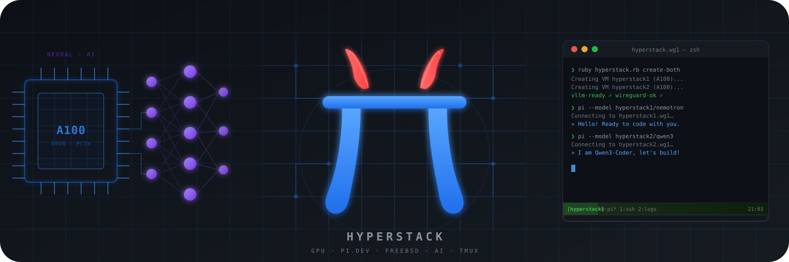
Automates Hyperstack GPU VM lifecycle: create, bootstrap, WireGuard tunnel, and vLLM inference.
Runs two A100 VMs concurrently — each serving a different model — with [Pi](https://pi.dev) coding agents connected to each.
View on GitHub
---
22. foostore
- 💻 Languages: Go (100.0%)
- 📚 Documentation: Markdown (100.0%)
- 📊 Commits: 130
- 📈 Lines of Code: 10592
- 📄 Lines of Documentation: 162
- 🏷️ Tags: 12
- 📅 Development Period: 2018-05-26 to 2026-04-29
- 🏆 Score: 3.7 (combines recent activity, code size, tags, and release status)
- ⚖️ License: No license found
- 🏷️ Latest Release: v0.8.1 (2026-04-29)
**🚧 PRE-ALPHA SOFTWARE:** This project is in active early development, unstable, and intended for personal use. Expect bugs, breaking changes, missing safeguards, and possible data loss. Backward compatibility and upgrade paths are not guaranteed. Use at your own risk.
View on GitHub
---
23. irregular.ninja
- 💻 Languages: Config (100.0%)
- 📚 Documentation: Markdown (100.0%)
- 📊 Commits: 21
- 📈 Lines of Code: 112
- 📄 Lines of Documentation: 48
- 🏷️ Tags: 0
- 📅 Development Period: 2026-06-15 to 2026-07-18
- 🏆 Score: 3.7 (combines recent activity, code size, tags, and release status)
- ⚖️ License: No license found
- 🧪 Status: Experimental (no releases yet)
The architecture is straightforward: source photos live outside the repo (referenced via symlinks), and just recipes invoke shuriken.sh to transform them into static albums. This keeps the repo lean while making builds reproducible and easy to automate—just run just all to regenerate both sites, or target a single album individually.
View on GitHub
---
24. gogios
- 💻 Languages: Go (98.9%), JSON (0.6%), YAML (0.5%)
- 📚 Documentation: Markdown (96.7%), Text (3.3%)
- 📊 Commits: 122
- 📈 Lines of Code: 3983
- 📄 Lines of Documentation: 610
- 🏷️ Tags: 14
- 📅 Development Period: 2023-04-17 to 2026-08-13
- 🏆 Score: 3.3 (combines recent activity, code size, tags, and release status)
- ⚖️ License: Custom License
- 🏷️ Latest Release: v1.4.5 (2026-08-13)
Gogios is a lightweight and minimalistic monitoring tool not designed for large-scale monitoring. It is ideal for monitoring self-hosted servers on a tiny scale, such as only a handful of servers or virtual machines (e.g. my personal infrastructure). If you have limited resources to monitor and require a simple yet effective solution, Gogios is an excellent choice. However, for larger environments with more complex monitoring requirements, it might be necessary to consider other monitoring solutions better suited for managing and scaling with increased monitoring demands.
View on Codeberg
View on GitHub
---
25. loadbars
- 💻 Languages: Go (92.8%), Shell (7.2%)
- 📚 Documentation: Markdown (100.0%)
- 📊 Commits: 537
- 📈 Lines of Code: 6595
- 📄 Lines of Documentation: 328
- 🏷️ Tags: 38
- 📅 Development Period: 2010-11-05 to 2026-03-02
- 🏆 Score: 3.2 (combines recent activity, code size, tags, and release status)
- ⚖️ License: Custom License
- 🏷️ Latest Release: v0.11.1 (2026-02-17)
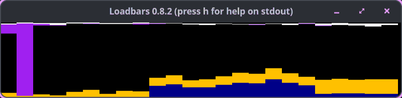
Loadbars is a real-time server load monitoring tool that visualizes CPU, memory, network, load average, and disk I/O statistics for multiple remote Linux servers simultaneously in an SDL2 window. It connects to hosts via SSH (using key-based auth) and runs an embedded Bash script that reads from /proc, parsing metrics like per-core CPU usage, RAM/swap, network throughput, and disk I/O — then renders them as vertical colored bars side by side. Unlike graphing tools that require data collection over time, Loadbars shows only the current state (like top or vmstat), making it useful for quick, at-a-glance monitoring of cluster health across many machines.
Architecturally, the Go binary embeds the remote monitoring script at build time and runs it locally or over SSH via bash -s, so remote hosts need only bash and /proc (no Go installation required). The codebase is organized into internal/ packages: collector handles script execution and metric parsing, display manages the SDL2 rendering loop and hotkey-driven toggles (per-core vs. aggregate views, extended peak lines, memory/network/load/disk bars), config manages CLI flags and ~/.loadbarsrc persistence, and stats defines the shared data structures. macOS is supported as a client for monitoring remote Linux hosts, though local monitoring requires Linux.
View on Codeberg
View on GitHub
---
26. timesamurai
- 💻 Languages: Go (99.3%), Shell (0.6%), YAML (0.1%)
- 📚 Documentation: Markdown (100.0%)
- 📊 Commits: 96
- 📈 Lines of Code: 10363
- 📄 Lines of Documentation: 112
- 🏷️ Tags: 5
- 📅 Development Period: 2025-06-25 to 2026-03-26
- 🏆 Score: 3.2 (combines recent activity, code size, tags, and release status)
- ⚖️ License: MIT
- 🏷️ Latest Release: v0.8.0 (2026-03-26)
**🚧 PRE-ALPHA SOFTWARE:** This project is in a pre-alpha state and is intended for my own personal use only. Use at your own risk.
View on GitHub
---
27. ds-sim
- 💻 Languages: Java (98.6%), Shell (0.9%), CSS (0.4%)
- 📚 Documentation: Markdown (98.7%), Text (1.3%)
- 📊 Commits: 474
- 📈 Lines of Code: 28576
- 📄 Lines of Documentation: 3103
- 🏷️ Tags: 2
- 📅 Development Period: 2008-05-15 to 2026-03-30
- 🏆 Score: 2.9 (combines recent activity, code size, tags, and release status)
- ⚖️ License: Custom License
- 🏷️ Latest Release: 1.1.0 (2026-03-27)
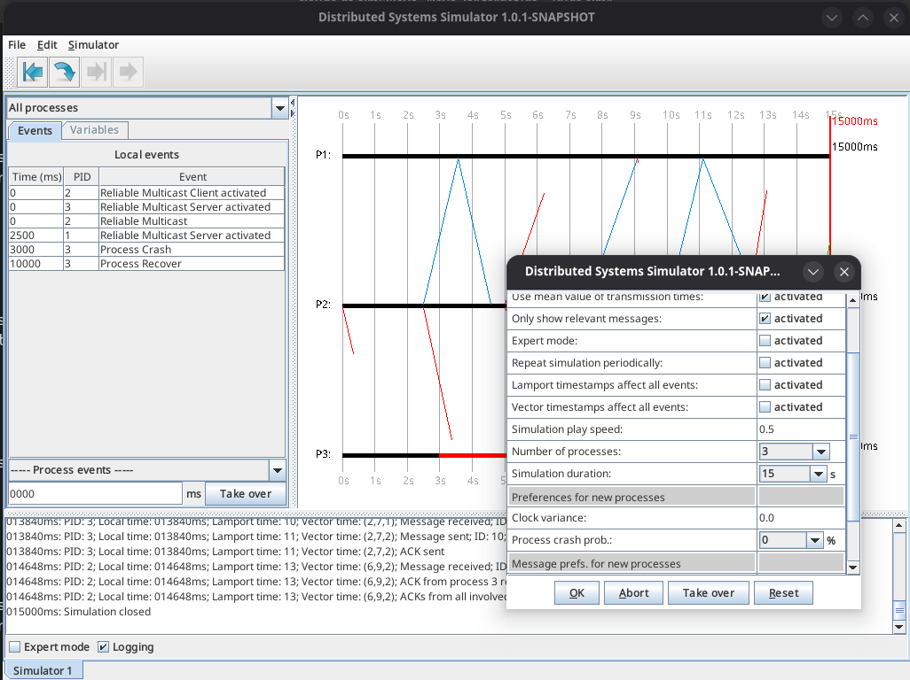
DS-Sim is a open-source simulator for distributed systems, written in Java. It provides a powerful environment for simulating and learning about distributed systems concepts.
View on GitHub
---
28. comicforge
- 💻 Languages: Go (100.0%)
- 📚 Documentation: Markdown (95.9%), Text (4.1%)
- 📊 Commits: 49
- 📈 Lines of Code: 11223
- 📄 Lines of Documentation: 998
- 🏷️ Tags: 0
- 📅 Development Period: 2026-04-19 to 2026-04-23
- 🏆 Score: 2.9 (combines recent activity, code size, tags, and release status)
- ⚖️ License: No license found
- 🧪 Status: Experimental (no releases yet)
ComicForge turns a vocabulary file into a generated comic package. It uses Gemini-backed providers to write a story, draw comic pages, and optionally produce narration. The CLI writes comic assets into ./comics/assets/<slug>/, gallery copies into ./comics/gallery/, and final PDFs into ./comics/PDF/.
View on GitHub
---
29. rampage
- 💻 Languages: Go (100.0%)
- 📊 Commits: 2
- 📈 Lines of Code: 736
- 🏷️ Tags: 0
- 📅 Development Period: 2026-05-03 to 2026-05-04
- 🏆 Score: 2.7 (combines recent activity, code size, tags, and release status)
- ⚖️ License: No license found
- 🧪 Status: Experimental (no releases yet)
rampage: source code repository.
View on GitHub
---
30. gemtexter
- 💻 Languages: Shell (52.2%), CSS (35.5%), HTML (10.5%), Config (1.9%)
- 📚 Documentation: Text (75.1%), Markdown (24.9%)
- 📊 Commits: 491
- 📈 Lines of Code: 3426
- 📄 Lines of Documentation: 1195
- 🏷️ Tags: 6
- 📅 Development Period: 2021-05-21 to 2026-08-16
- 🏆 Score: 2.1 (combines recent activity, code size, tags, and release status)
- ⚖️ License: GPL-3.0
- 🏷️ Latest Release: 3.0.0 (2024-10-01)
This is the source code of my personal internet site and blog engine. All content is written in Gemini Gemtext format, but the script gemtexter generates multiple other static output formats (with zero JavaScript) from it. You can reach the site(s)...
View on Codeberg
View on GitHub
---
31. yoga
- 💻 Languages: Go (69.1%), HTML (30.9%)
- 📚 Documentation: Markdown (100.0%)
- 📊 Commits: 17
- 📈 Lines of Code: 6498
- 📄 Lines of Documentation: 196
- 🏷️ Tags: 9
- 📅 Development Period: 2025-10-01 to 2026-03-07
- 🏆 Score: 2.0 (combines recent activity, code size, tags, and release status)
- ⚖️ License: No license found
- 🏷️ Latest Release: v0.4.0 (2026-01-28)
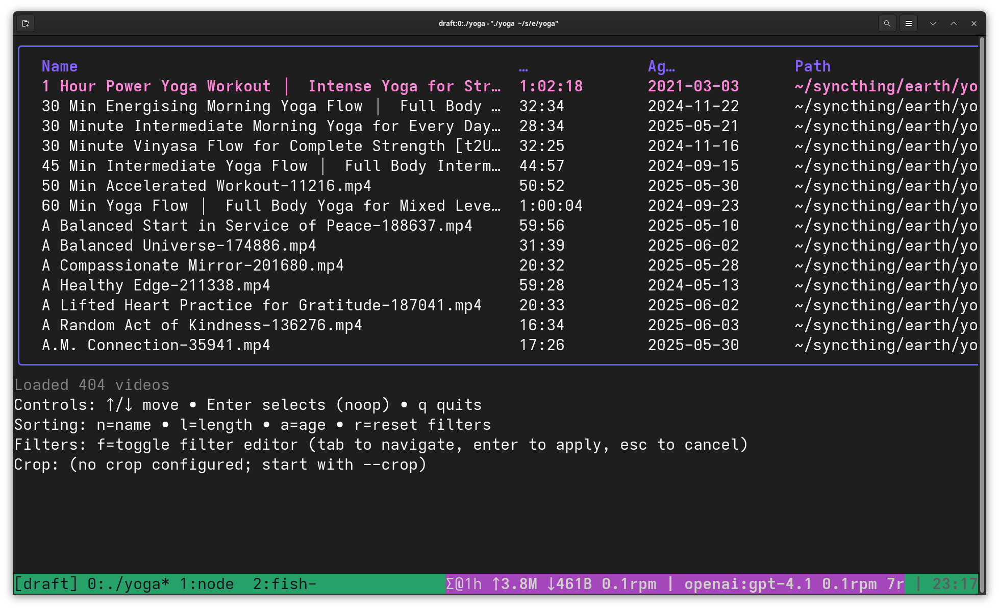
**⚠️ DEPRECATED:** This project is no longer maintained. No further updates, bug fixes, or feature additions will be made. Use at your own risk.
View on GitHub
---
32. rcm
- 💻 Languages: Ruby (99.6%), TOML (0.4%)
- 📚 Documentation: Markdown (100.0%)
- 📊 Commits: 109
- 📈 Lines of Code: 1719
- 📄 Lines of Documentation: 778
- 🏷️ Tags: 3
- 📅 Development Period: 2024-12-05 to 2026-03-02
- 🏆 Score: 1.9 (combines recent activity, code size, tags, and release status)
- ⚖️ License: Custom License
- 🏷️ Latest Release: v0.1.1 (2026-03-01)
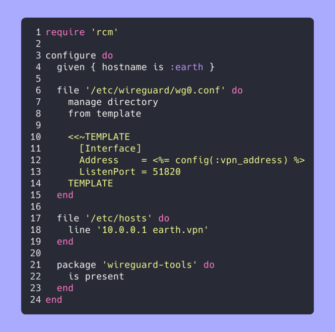
A KISS (Keep It Simple, Stupid) configuration management system written in Ruby, designed for personal use.
View on Codeberg
View on GitHub
---
33. epimetheus
- 💻 Languages: Go (85.2%), Shell (14.8%)
- 📚 Documentation: Markdown (100.0%)
- 📊 Commits: 4
- 📈 Lines of Code: 5199
- 📄 Lines of Documentation: 1736
- 🏷️ Tags: 0
- 📅 Development Period: 2026-02-07 to 2026-03-07
- 🏆 Score: 1.8 (combines recent activity, code size, tags, and release status)
- ⚖️ License: No license found
- 🧪 Status: Experimental (no releases yet)
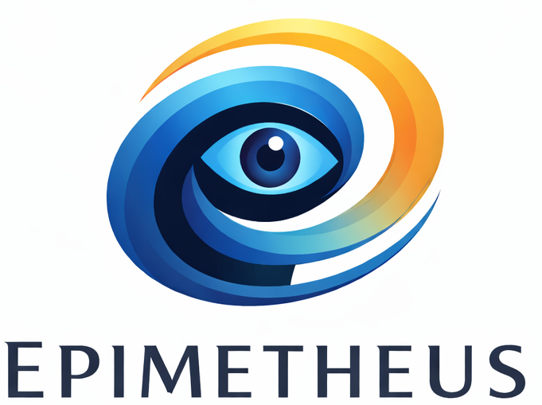
**🚧 PRE-ALPHA SOFTWARE:** This project is in a pre-alpha state and is intended for my own personal use only. Use at your own risk.
View on GitHub
---
34. gos
- 💻 Languages: Go (99.6%), JSON (0.2%), Shell (0.2%)
- 📚 Documentation: Markdown (100.0%)
- 📊 Commits: 408
- 📈 Lines of Code: 4534
- 📄 Lines of Documentation: 477
- 🏷️ Tags: 17
- 📅 Development Period: 2024-05-04 to 2026-07-05
- 🏆 Score: 1.7 (combines recent activity, code size, tags, and release status)
- ⚖️ License: Custom License
- 🏷️ Latest Release: v1.3.1 (2026-07-05)
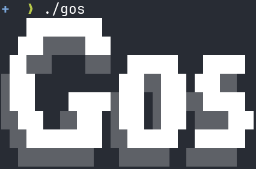
Gos is a Go-based replacement for Buffer.com, providing the ability to schedule and manage social media posts from the command line. It can be run, for example, every time you open a new shell or only once every N hours when you open a new shell.
View on Codeberg
View on GitHub
---
35. scifi
- 💻 Languages: JSON (36.6%), JavaScript (30.2%), CSS (29.6%), HTML (3.7%)
- 📚 Documentation: Markdown (100.0%)
- 📊 Commits: 27
- 📈 Lines of Code: 1724
- 📄 Lines of Documentation: 874
- 🏷️ Tags: 0
- 📅 Development Period: 2026-01-25 to 2026-03-13
- 🏆 Score: 1.6 (combines recent activity, code size, tags, and release status)
- ⚖️ License: No license found
- 🧪 Status: Experimental (no releases yet)
A static HTML page showcasing a science fiction book collection. Works fully offline with all assets stored locally.
View on GitHub
---
36. log4jbench
- 💻 Languages: Java (78.9%), XML (21.1%)
- 📚 Documentation: Markdown (100.0%)
- 📊 Commits: 4
- 📈 Lines of Code: 774
- 📄 Lines of Documentation: 119
- 🏷️ Tags: 0
- 📅 Development Period: 2026-01-09 to 2026-01-09
- 🏆 Score: 1.4 (combines recent activity, code size, tags, and release status)
- ⚖️ License: MIT
- 🧪 Status: Experimental (no releases yet)
A minimal Java tool to benchmark Log4j2 logging throughput with configurable concurrent threads and various logging configurations.
View on GitHub
---
37. timr
- 💻 Languages: Go (96.0%), Shell (4.0%)
- 📚 Documentation: Markdown (100.0%)
- 📊 Commits: 32
- 📈 Lines of Code: 1538
- 📄 Lines of Documentation: 99
- 🏷️ Tags: 5
- 📅 Development Period: 2025-06-25 to 2026-01-02
- 🏆 Score: 1.3 (combines recent activity, code size, tags, and release status)
- ⚖️ License: MIT
- 🏷️ Latest Release: v0.3.0 (2026-01-02)
A simple command-line tool to track time spent on tasks. It has been primarily coded using Google Gemini CLI and Claude Code CLI.
View on GitHub
---
38. foostats
- 💻 Languages: Perl (100.0%)
- 📚 Documentation: Markdown (54.6%), Text (45.4%)
- 📊 Commits: 98
- 📈 Lines of Code: 1902
- 📄 Lines of Documentation: 423
- 🏷️ Tags: 2
- 📅 Development Period: 2023-01-02 to 2025-11-01
- 🏆 Score: 1.3 (combines recent activity, code size, tags, and release status)
- ⚖️ License: Custom License
- 🏷️ Latest Release: v0.2.0 (2025-10-21)
A privacy-respecting web analytics tool for OpenBSD that processes HTTP/HTTPS and Gemini protocol logs to generate anonymous site statistics. Designed for the foo.zone ecosystem and similar sites, it provides comprehensive traffic analysis while preserving visitor privacy through SHA3-512 IP hashing.
View on Codeberg
View on GitHub
---
39. wireguardmeshgenerator
- 💻 Languages: Ruby (66.0%), YAML (34.0%)
- 📚 Documentation: Markdown (100.0%)
- 📊 Commits: 44
- 📈 Lines of Code: 967
- 📄 Lines of Documentation: 208
- 🏷️ Tags: 1
- 📅 Development Period: 2025-04-18 to 2026-08-04
- 🏆 Score: 1.2 (combines recent activity, code size, tags, and release status)
- ⚖️ License: Custom License
- 🏷️ Latest Release: v1.0.0 (2025-05-11)
Have a look at the wireguardmeshgenerator.yaml
View on Codeberg
View on GitHub
---
40. ioriot
- 💻 Languages: C (58.7%), C/C++ (22.5%), Config (17.9%), Make (1.0%)
- 📚 Documentation: Markdown (100.0%)
- 📊 Commits: 80
- 📈 Lines of Code: 13609
- 📄 Lines of Documentation: 899
- 🏷️ Tags: 7
- 📅 Development Period: 2018-03-01 to 2026-03-19
- 🏆 Score: 0.9 (combines recent activity, code size, tags, and release status)
- ⚖️ License: Apache-2.0
- 🏷️ Latest Release: 0.5.1 (2019-01-04)
...is an I/O benchmarking tool for Linux based operating systems which captures I/O operations on a (possibly production) server in order to replay the exact same I/O operations on a load test machine.
View on Codeberg
View on GitHub
---
41. quicklogger
- 💻 Languages: Go (84.1%), Shell (11.4%), Java (4.0%), TOML (0.4%)
- 📚 Documentation: Markdown (100.0%)
- 📊 Commits: 47
- 📈 Lines of Code: 1808
- 📄 Lines of Documentation: 472
- 🏷️ Tags: 7
- 📅 Development Period: 2024-01-20 to 2026-08-08
- 🏆 Score: 0.9 (combines recent activity, code size, tags, and release status)
- ⚖️ License: MIT
- 🏷️ Latest Release: v0.2.0 (2026-08-08)
This is a tiny GUI app written in Go using the Fyne framework to quickly log a message to a file. Read on my blog more about this: https://foo.zone/gemfeed/2024-03-03-a-fine-fyne-android-app-for-quickly-logging-ideas-programmed-in-golang.html
View on GitHub
---
42. quicklog
- 💻 Languages: Dart (55.6%), CMake (12.6%), Kotlin (10.6%), C++ (8.6%), XML (7.6%), YAML (3.3%), C/C++ (1.9%)
- 📚 Documentation: Markdown (100.0%)
- 📊 Commits: 45
- 📈 Lines of Code: 1926
- 📄 Lines of Documentation: 185
- 🏷️ Tags: 1
- 📅 Development Period: 2024-01-20 to 2026-08-08
- 🏆 Score: 0.7 (combines recent activity, code size, tags, and release status)
- ⚖️ License: MIT
- 🏷️ Latest Release: v0.1.2 (2026-08-08)

Tiny GUI app to quickly jot a thought into a timestamped Markdown file.
Originally a Go/Fyne app called *Quicklogger* — this is the Flutter rewrite,
renamed to **Quicklog**, targeting Android (primary) and Linux desktop
(development).
View on GitHub
---
43. sillybench
- 💻 Languages: Go (90.9%), Shell (9.1%)
- 📚 Documentation: Markdown (100.0%)
- 📊 Commits: 5
- 📈 Lines of Code: 33
- 📄 Lines of Documentation: 3
- 🏷️ Tags: 0
- 📅 Development Period: 2025-04-03 to 2025-04-03
- 🏆 Score: 0.5 (combines recent activity, code size, tags, and release status)
- ⚖️ License: No license found
- 🧪 Status: Experimental (no releases yet)
To compare how fast this runs on FreeBSD vs a Linux Bhyve VM
View on GitHub
---
- 💻 Languages: HCL (96.6%), Make (1.9%), YAML (1.5%)
- 📚 Documentation: Markdown (100.0%)
- 📊 Commits: 126
- 📈 Lines of Code: 2852
- 📄 Lines of Documentation: 52
- 🏷️ Tags: 0
- 📅 Development Period: 2023-08-27 to 2026-07-23
- 🏆 Score: 0.4 (combines recent activity, code size, tags, and release status)
- ⚖️ License: MIT
- 🧪 Status: Experimental (no releases yet)
⚠️ **Notice**: This project appears to be inactive or no longer maintained. The average age of its last 42 commits exceeds 2 years. Use at your own risk.
Go to AWS Secrets manager manually and create it!
View on Codeberg
View on GitHub
---
45. guprecords
- 💻 Languages: Raku (100.0%)
- 📚 Documentation: Markdown (100.0%)
- 📊 Commits: 97
- 📈 Lines of Code: 383
- 📄 Lines of Documentation: 425
- 🏷️ Tags: 1
- 📅 Development Period: 2013-03-22 to 2026-03-07
- 🏆 Score: 0.4 (combines recent activity, code size, tags, and release status)
- ⚖️ License: No license found
- 🏷️ Latest Release: v1.0.0 (2023-04-29)
⚠️ **Notice**: This project appears to be inactive or no longer maintained. The average age of its last 42 commits exceeds 2 years. Use at your own risk.
guprecords: source code repository.
View on Codeberg
View on GitHub
---
46. photoalbum
- 💻 Languages: Shell (92.5%), Make (4.6%), Config (2.9%)
- 📚 Documentation: Markdown (100.0%)
- 📊 Commits: 159
- 📈 Lines of Code: 908
- 📄 Lines of Documentation: 42
- 🏷️ Tags: 18
- 📅 Development Period: 2011-11-19 to 2026-06-09
- 🏆 Score: 0.4 (combines recent activity, code size, tags, and release status)
- ⚖️ License: No license found
- 🏷️ Latest Release: 0.8.1 (2026-06-09)
⚠️ **Notice**: This project appears to be inactive or no longer maintained. The average age of its last 42 commits exceeds 2 years. Use at your own risk.
photoalbum is a minimal Bash script for Unix like operating systems (such as Linux) to generate static web photo albums.
The resulting static photo album is pure HTML+CSS (without any JavaScript!).
View on Codeberg
View on GitHub
---
47. geheim
- 💻 Languages: Ruby (86.7%), Shell (13.3%)
- 📚 Documentation: Markdown (100.0%)
- 📊 Commits: 75
- 📈 Lines of Code: 822
- 📄 Lines of Documentation: 108
- 🏷️ Tags: 4
- 📅 Development Period: 2018-05-26 to 2026-03-07
- 🏆 Score: 0.4 (combines recent activity, code size, tags, and release status)
- ⚖️ License: No license found
- 🏷️ Latest Release: v0.3.1 (2025-11-01)
⚠️ **Notice**: This project appears to be inactive or no longer maintained. The average age of its last 42 commits exceeds 2 years. Use at your own risk.
**⚠️ DEPRECATED:** This project is no longer maintained. I have switched to another solution and will not be doing any further work on this project.
View on Codeberg
View on GitHub
---
48. gorum
- 💻 Languages: Go (91.3%), JSON (6.4%), YAML (2.3%)
- 📚 Documentation: Markdown (100.0%)
- 📊 Commits: 83
- 📈 Lines of Code: 1525
- 📄 Lines of Documentation: 17
- 🏷️ Tags: 0
- 📅 Development Period: 2023-04-17 to 2026-03-07
- 🏆 Score: 0.3 (combines recent activity, code size, tags, and release status)
- ⚖️ License: Custom License
- 🧪 Status: Experimental (no releases yet)
⚠️ **Notice**: This project appears to be inactive or no longer maintained. The average age of its last 42 commits exceeds 2 years. Use at your own risk.
Gogios is a minimalistic quorum manager.
View on Codeberg
View on GitHub
---
49. docker-radicale-server
- 💻 Languages: Make (57.5%), Docker (42.5%)
- 📚 Documentation: Markdown (100.0%)
- 📊 Commits: 5
- 📈 Lines of Code: 40
- 📄 Lines of Documentation: 3
- 🏷️ Tags: 0
- 📅 Development Period: 2023-12-31 to 2025-08-11
- 🏆 Score: 0.3 (combines recent activity, code size, tags, and release status)
- ⚖️ License: No license found
- 🧪 Status: Experimental (no releases yet)
⚠️ **Notice**: This project appears to be inactive or no longer maintained. The average age of its last 42 commits exceeds 2 years. Use at your own risk.
For the Radicale server https://radicale.org
View on Codeberg
View on GitHub
---
50. randomjournalpage
- 💻 Languages: Shell (94.1%), Make (5.9%)
- 📚 Documentation: Markdown (100.0%)
- 📊 Commits: 9
- 📈 Lines of Code: 51
- 📄 Lines of Documentation: 26
- 🏷️ Tags: 0
- 📅 Development Period: 2022-06-02 to 2026-08-05
- 🏆 Score: 0.2 (combines recent activity, code size, tags, and release status)
- ⚖️ License: No license found
- 🧪 Status: Experimental (no releases yet)
⚠️ **Notice**: This project appears to be inactive or no longer maintained. The average age of its last 42 commits exceeds 2 years. Use at your own risk.
This is a quick and dirty script which I use personally to grab a random PDF file (a scanned version of one of my bullet journals) and to extract a random set of pages from it in order to reflect/read what was happening in the past. This also includes various notes of books I have read and random ideas I wrote down and my want to reconsider.
View on Codeberg
View on GitHub
---
51. failunderd
- 💻 Languages: Perl (89.7%), Config (5.0%), Make (3.1%), Shell (2.1%)
- 📚 Documentation: Markdown (100.0%)
- 📊 Commits: 151
- 📈 Lines of Code: 614
- 📄 Lines of Documentation: 32
- 🏷️ Tags: 0
- 📅 Development Period: 2011-02-05 to 2022-05-13
- 🏆 Score: 0.2 (combines recent activity, code size, tags, and release status)
- ⚖️ License: Custom License
- 🧪 Status: Experimental (no releases yet)
⚠️ **Notice**: This project appears to be inactive or no longer maintained. The average age of its last 42 commits exceeds 2 years. Use at your own risk.
Let me examine the project's source code to provide an accurate summary.
FailunderD is a zero-dependency failover automation daemon written in Perl for OpenBSD hosts on Hetzner Cloud, leveraging Hetzner's floating IPs to provide high availability across a small fleet of nodes. It runs as a system daemon (managed via rcctl) that periodically polls each configured participant's HTTP and Gemini endpoints, exchanges status JSON with partner nodes over a TCP socket, and computes a health "score" per peer. Stale or failing peers lose points, enabling the daemon to determine which node should hold the floating IP. Despite its name advertising "zero-dependency," the code relies only on Perl core modules (HTTP::Tiny, IO::Socket::INET, JSON::PP, Sys::Syslog) plus sendmail for email notifications.
Architecturally, it follows a small plugin-module pattern: bin/failunderd handles daemonization, PID management, signal handling, config parsing, and a timing-accurate main loop; FailunderD::RunModules dynamically discovers and instantiates modules from a configured directory and schedules their execution with sub-interval carry-over to avoid drift; FailunderD::Logger is a syslog/STDOUT singleton that also dispatches mail notifications via sendmail. The only shipped module, FailunderD::Modules::Handler, performs the actual health checks, status-file writes (atomic via tmp+rename), remote status fetches, score aggregation, and daily email reports — making the failover logic itself pluggable without touching the daemon core.
View on Codeberg
View on GitHub
---
52. algorithms
- 💻 Languages: Go (96.5%), Make (2.0%), Config (1.5%)
- 📚 Documentation: Markdown (100.0%)
- 📊 Commits: 84
- 📈 Lines of Code: 2107
- 📄 Lines of Documentation: 821
- 🏷️ Tags: 0
- 📅 Development Period: 2020-07-12 to 2026-07-06
- 🏆 Score: 0.2 (combines recent activity, code size, tags, and release status)
- ⚖️ License: Custom License
- 🧪 Status: Experimental (no releases yet)
⚠️ **Notice**: This project appears to be inactive or no longer maintained. The average age of its last 42 commits exceeds 2 years. Use at your own risk.
This includes exercises from the Algorithms lecture. Well, this is just a refresher exercise.
View on GitHub
---
53. staticfarm-apache-handlers
- 💻 Languages: Perl (96.4%), Make (3.6%)
- 📚 Documentation: Text (100.0%)
- 📊 Commits: 4
- 📈 Lines of Code: 919
- 📄 Lines of Documentation: 16
- 🏷️ Tags: 1
- 📅 Development Period: 2015-01-02 to 2026-03-07
- 🏆 Score: 0.2 (combines recent activity, code size, tags, and release status)
- ⚖️ License: No license found
- 🏷️ Latest Release: 1.1.3 (2015-01-02)
⚠️ **Notice**: This project appears to be inactive or no longer maintained. The average age of its last 42 commits exceeds 2 years. Use at your own risk.
DEPRECATED
This project is no longer maintained. No further updates, bug fixes, or
feature additions will be made. Use at your own risk.
View on Codeberg
View on GitHub
---
54. ipv6test
- 💻 Languages: Perl (65.8%), Docker (34.2%)
- 📚 Documentation: Markdown (100.0%)
- 📊 Commits: 22
- 📈 Lines of Code: 149
- 📄 Lines of Documentation: 21
- 🏷️ Tags: 0
- 📅 Development Period: 2011-07-09 to 2026-02-17
- 🏆 Score: 0.2 (combines recent activity, code size, tags, and release status)
- ⚖️ License: Custom License
- 🧪 Status: Experimental (no releases yet)
⚠️ **Notice**: This project appears to be inactive or no longer maintained. The average age of its last 42 commits exceeds 2 years. Use at your own risk.
This is a quick and dirty Perl-based IPv6 test website.
View on Codeberg
View on GitHub
---
55. sway-autorotate
- 💻 Languages: Shell (100.0%)
- 📚 Documentation: Markdown (100.0%)
- 📊 Commits: 8
- 📈 Lines of Code: 41
- 📄 Lines of Documentation: 17
- 🏷️ Tags: 0
- 📅 Development Period: 2020-01-30 to 2025-04-30
- 🏆 Score: 0.2 (combines recent activity, code size, tags, and release status)
- ⚖️ License: GPL-3.0
- 🧪 Status: Experimental (no releases yet)
⚠️ **Notice**: This project appears to be inactive or no longer maintained. The average age of its last 42 commits exceeds 2 years. Use at your own risk.
This is a fork of https://github.com/tedk0n/autorotate_sway_script
View on Codeberg
View on GitHub
---
56. mon
- 💻 Languages: Perl (96.5%), Shell (1.8%), Make (1.2%), Config (0.4%)
- 📚 Documentation: Text (100.0%)
- 📊 Commits: 8
- 📈 Lines of Code: 5360
- 📄 Lines of Documentation: 793
- 🏷️ Tags: 2
- 📅 Development Period: 2015-01-02 to 2026-03-07
- 🏆 Score: 0.2 (combines recent activity, code size, tags, and release status)
- ⚖️ License: No license found
- 🏷️ Latest Release: 1.0.1 (2015-01-02)
⚠️ **Notice**: This project appears to be inactive or no longer maintained. The average age of its last 42 commits exceeds 2 years. Use at your own risk.
DEPRECATED
This project is no longer maintained. No further updates, bug fixes, or
feature additions will be made. Use at your own risk.
View on GitHub
---
57. fapi
- 💻 Languages: Python (96.6%), Make (3.1%), Config (0.3%)
- 📚 Documentation: Text (98.3%), Markdown (1.7%)
- 📊 Commits: 222
- 📈 Lines of Code: 1681
- 📄 Lines of Documentation: 543
- 🏷️ Tags: 32
- 📅 Development Period: 2014-03-10 to 2026-03-07
- 🏆 Score: 0.1 (combines recent activity, code size, tags, and release status)
- ⚖️ License: No license found
- 🏷️ Latest Release: 1.0.2 (2014-11-17)
⚠️ **Notice**: This project appears to be inactive or no longer maintained. The average age of its last 42 commits exceeds 2 years. Use at your own risk.
DEPRECATED
This project is no longer maintained. No further updates, bug fixes, or
feature additions will be made. Use at your own risk.
View on GitHub
---
58. pingdomfetch
- 💻 Languages: Perl (97.3%), Make (2.7%)
- 📚 Documentation: Text (100.0%)
- 📊 Commits: 10
- 📈 Lines of Code: 1839
- 📄 Lines of Documentation: 416
- 🏷️ Tags: 3
- 📅 Development Period: 2015-01-02 to 2026-03-07
- 🏆 Score: 0.1 (combines recent activity, code size, tags, and release status)
- ⚖️ License: No license found
- 🏷️ Latest Release: 1.0.2 (2015-01-02)
⚠️ **Notice**: This project appears to be inactive or no longer maintained. The average age of its last 42 commits exceeds 2 years. Use at your own risk.
DEPRECATED
This project is no longer maintained. No further updates, bug fixes, or
feature additions will be made. Use at your own risk.
View on Codeberg
View on GitHub
---
59. xerl
- 💻 Languages: CSS (54.6%), XML (39.1%), Perl (4.0%), Make (2.2%)
- 📚 Documentation: Text (91.2%), Org (4.9%), Markdown (3.9%)
- 📊 Commits: 663
- 📈 Lines of Code: 815
- 📄 Lines of Documentation: 102
- 🏷️ Tags: 0
- 📅 Development Period: 2011-03-06 to 2021-11-02
- 🏆 Score: 0.1 (combines recent activity, code size, tags, and release status)
- ⚖️ License: Custom License
- 🧪 Status: Experimental (no releases yet)
⚠️ **Notice**: This project appears to be inactive or no longer maintained. The average age of its last 42 commits exceeds 2 years. Use at your own risk.
Those are the host templates to be used with Xerl itself.
View on Codeberg
View on GitHub
---
60. playground
- 💻 Languages: Ruby (100.0%)
- 📊 Commits: 5
- 📈 Lines of Code: 15
- 🏷️ Tags: 0
- 📅 Development Period: 2021-01-02 to 2025-06-09
- 🏆 Score: 0.1 (combines recent activity, code size, tags, and release status)
- ⚖️ License: No license found
- 🧪 Status: Experimental (no releases yet)
⚠️ **Notice**: This project appears to be inactive or no longer maintained. The average age of its last 42 commits exceeds 2 years. Use at your own risk.
playground: source code repository.
View on Codeberg
View on GitHub
---
61. pwgrep
- 💻 Languages: Shell (85.0%), Make (15.0%)
- 📚 Documentation: Text (75.0%), Markdown (25.0%)
- 📊 Commits: 115
- 📈 Lines of Code: 493
- 📄 Lines of Documentation: 28
- 🏷️ Tags: 22
- 📅 Development Period: 2009-09-27 to 2026-03-07
- 🏆 Score: 0.1 (combines recent activity, code size, tags, and release status)
- ⚖️ License: No license found
- 🏷️ Latest Release: 0.9.3 (2014-06-14)
⚠️ **Notice**: This project appears to be inactive or no longer maintained. The average age of its last 42 commits exceeds 2 years. Use at your own risk.
**⚠️ DEPRECATED:** This project is no longer maintained. No further updates, bug fixes, or feature additions will be made. Use at your own risk.
View on Codeberg
View on GitHub
---
62. awksite
- 💻 Languages: AWK (72.1%), HTML (16.4%), Config (11.5%)
- 📚 Documentation: Markdown (50.0%), Text (50.0%)
- 📊 Commits: 3
- 📈 Lines of Code: 122
- 📄 Lines of Documentation: 12
- 🏷️ Tags: 1
- 📅 Development Period: 2011-01-27 to 2026-03-07
- 🏆 Score: 0.1 (combines recent activity, code size, tags, and release status)
- ⚖️ License: No license found
- 🏷️ Latest Release: v0.2 (2011-01-27)
⚠️ **Notice**: This project appears to be inactive or no longer maintained. The average age of its last 42 commits exceeds 2 years. Use at your own risk.
Awksite is a minimal CGI application written entirely in GNU AWK that generates dynamic HTML pages using a simple template engine. It reads key-value pairs from a configuration file (awksite.conf), where values can be static strings or shell commands (prefixed with !), then substitutes %%key%% placeholders in an HTML template file with the corresponding values. It also supports a !sort directive to insert sorted file contents. The entire runtime is a single 88-line AWK script, making it incredibly lightweight and portable across any Unix system with GNU AWK.
It's useful for quickly standing up simple dynamic websites—like server status pages—without needing a full programming language runtime or web framework. The architecture is straightforward: index.cgi reads the config, emits an HTTP header, and iterates over the template line by line, recursively resolving any %%placeholder%% tags by looking up values (or executing shell commands) from the config.
View on Codeberg
View on GitHub
---
63. japi
- 💻 Languages: Perl (78.3%), Make (21.7%)
- 📚 Documentation: Text (100.0%)
- 📊 Commits: 42
- 📈 Lines of Code: 286
- 📄 Lines of Documentation: 148
- 🏷️ Tags: 12
- 📅 Development Period: 2013-03-22 to 2026-03-07
- 🏆 Score: 0.1 (combines recent activity, code size, tags, and release status)
- ⚖️ License: No license found
- 🏷️ Latest Release: 0.4.3 (2014-06-16)
⚠️ **Notice**: This project appears to be inactive or no longer maintained. The average age of its last 42 commits exceeds 2 years. Use at your own risk.
DEPRECATED
This project is no longer maintained. No further updates, bug fixes, or
feature additions will be made. Use at your own risk.
View on Codeberg
View on GitHub
---
64. gotop
- 💻 Languages: Go (98.0%), Make (2.0%)
- 📚 Documentation: Markdown (60.0%), Text (40.0%)
- 📊 Commits: 58
- 📈 Lines of Code: 499
- 📄 Lines of Documentation: 10
- 🏷️ Tags: 1
- 📅 Development Period: 2015-05-24 to 2026-03-07
- 🏆 Score: 0.1 (combines recent activity, code size, tags, and release status)
- ⚖️ License: No license found
- 🏷️ Latest Release: 0.1 (2015-06-01)
⚠️ **Notice**: This project appears to be inactive or no longer maintained. The average age of its last 42 commits exceeds 2 years. Use at your own risk.
**⚠️ DEPRECATED:** This project is no longer maintained. No further updates, bug fixes, or feature additions will be made. Use at your own risk.
View on Codeberg
View on GitHub
---
65. perldaemon
- 💻 Languages: Perl (72.7%), Shell (23.9%), Config (3.4%)
- 📊 Commits: 111
- 📈 Lines of Code: 611
- 🏷️ Tags: 6
- 📅 Development Period: 2011-02-05 to 2026-03-07
- 🏆 Score: 0.1 (combines recent activity, code size, tags, and release status)
- ⚖️ License: Custom License
- 🏷️ Latest Release: v1.4 (2022-04-29)
⚠️ **Notice**: This project appears to be inactive or no longer maintained. The average age of its last 42 commits exceeds 2 years. Use at your own risk.
PerlDaemon is a minimal daemon for Linux and other UNIX a like operating system
programmed in Perl. It can be extended to fit any task...
View on Codeberg
View on GitHub
---
66. rubyfy
- 💻 Languages: Ruby (98.5%), JSON (1.5%)
- 📚 Documentation: Markdown (100.0%)
- 📊 Commits: 35
- 📈 Lines of Code: 273
- 📄 Lines of Documentation: 34
- 🏷️ Tags: 1
- 📅 Development Period: 2015-09-29 to 2026-03-07
- 🏆 Score: 0.1 (combines recent activity, code size, tags, and release status)
- ⚖️ License: Apache-2.0
- 🏷️ Latest Release: 0 (2015-10-26)
⚠️ **Notice**: This project appears to be inactive or no longer maintained. The average age of its last 42 commits exceeds 2 years. Use at your own risk.
**⚠️ DEPRECATED:** This project is no longer maintained. No further updates, bug fixes, or feature additions will be made. Use at your own risk.
View on Codeberg
View on GitHub
---
67. netdiff
- 💻 Languages: Shell (52.2%), Make (46.3%), Config (1.5%)
- 📚 Documentation: Text (100.0%)
- 📊 Commits: 43
- 📈 Lines of Code: 134
- 📄 Lines of Documentation: 110
- 🏷️ Tags: 10
- 📅 Development Period: 2013-03-22 to 2026-03-07
- 🏆 Score: 0.1 (combines recent activity, code size, tags, and release status)
- ⚖️ License: No license found
- 🏷️ Latest Release: 0.1.5 (2014-06-22)
⚠️ **Notice**: This project appears to be inactive or no longer maintained. The average age of its last 42 commits exceeds 2 years. Use at your own risk.
DEPRECATED
This project is no longer maintained. No further updates, bug fixes, or
feature additions will be made. Use at your own risk.
View on Codeberg
View on GitHub
---
68. perl-c-fibonacci
- 💻 Languages: C (80.4%), Make (19.6%)
- 📚 Documentation: Text (100.0%)
- 📊 Commits: 4
- 📈 Lines of Code: 51
- 📄 Lines of Documentation: 69
- 🏷️ Tags: 0
- 📅 Development Period: 2014-03-24 to 2022-04-23
- 🏆 Score: 0.1 (combines recent activity, code size, tags, and release status)
- ⚖️ License: No license found
- 🧪 Status: Experimental (no releases yet)
⚠️ **Notice**: This project appears to be inactive or no longer maintained. The average age of its last 42 commits exceeds 2 years. Use at your own risk.
perl-c-fibonacci: source code repository.
View on Codeberg
View on GitHub
---
69. muttdelay
- 💻 Languages: Make (47.1%), Shell (46.3%), Vim Script (5.9%), Config (0.7%)
- 📚 Documentation: Text (100.0%)
- 📊 Commits: 42
- 📈 Lines of Code: 136
- 📄 Lines of Documentation: 100
- 🏷️ Tags: 4
- 📅 Development Period: 2013-03-22 to 2026-03-07
- 🏆 Score: 0.1 (combines recent activity, code size, tags, and release status)
- ⚖️ License: No license found
- 🏷️ Latest Release: 0.2.0 (2014-07-05)
⚠️ **Notice**: This project appears to be inactive or no longer maintained. The average age of its last 42 commits exceeds 2 years. Use at your own risk.
DEPRECATED
This project is no longer maintained. No further updates, bug fixes, or
feature additions will be made. Use at your own risk.
View on Codeberg
View on GitHub
---
70. cpuinfo
- 💻 Languages: Shell (53.2%), Make (46.8%)
- 📚 Documentation: Text (100.0%)
- 📊 Commits: 26
- 📈 Lines of Code: 124
- 📄 Lines of Documentation: 75
- 🏷️ Tags: 3
- 📅 Development Period: 2010-11-05 to 2021-11-05
- 🏆 Score: 0.1 (combines recent activity, code size, tags, and release status)
- ⚖️ License: No license found
- 🏷️ Latest Release: 1.0.2 (2014-06-22)
⚠️ **Notice**: This project appears to be inactive or no longer maintained. The average age of its last 42 commits exceeds 2 years. Use at your own risk.
cpuinfo - A small and humble tool to print out CPU data
View on Codeberg
View on GitHub
---
71. dyndns
- 💻 Languages: Shell (100.0%)
- 📚 Documentation: Text (100.0%)
- 📊 Commits: 4
- 📈 Lines of Code: 18
- 📄 Lines of Documentation: 53
- 🏷️ Tags: 0
- 📅 Development Period: 2014-03-24 to 2026-03-07
- 🏆 Score: 0.1 (combines recent activity, code size, tags, and release status)
- ⚖️ License: No license found
- 🧪 Status: Experimental (no releases yet)
⚠️ **Notice**: This project appears to be inactive or no longer maintained. The average age of its last 42 commits exceeds 2 years. Use at your own risk.
DEPRECATED
This project is no longer maintained. No further updates, bug fixes, or
feature additions will be made. Use at your own risk.
View on Codeberg
View on GitHub
---
72. debroid
- 💻 Languages: Shell (92.0%), Make (8.0%)
- 📚 Documentation: Markdown (100.0%)
- 📊 Commits: 17
- 📈 Lines of Code: 88
- 📄 Lines of Documentation: 150
- 🏷️ Tags: 1
- 📅 Development Period: 2015-06-18 to 2026-03-07
- 🏆 Score: 0.1 (combines recent activity, code size, tags, and release status)
- ⚖️ License: No license found
- 🧪 Status: Experimental (no releases yet)
⚠️ **Notice**: This project appears to be inactive or no longer maintained. The average age of its last 42 commits exceeds 2 years. Use at your own risk.

**⚠️ DEPRECATED:** This project is no longer maintained. No further updates, bug fixes, or feature additions will be made. Use at your own risk.
View on Codeberg
View on GitHub
---
73. ychat
- 💻 Languages: C++ (50.4%), Shell (21.3%), C/C++ (20.8%), Perl (2.3%), HTML (2.3%), Config (2.2%), Make (0.7%), CSS (0.1%)
- 📚 Documentation: Text (100.0%)
- 📊 Commits: 23
- 📈 Lines of Code: 73818
- 📄 Lines of Documentation: 127
- 🏷️ Tags: 0
- 📅 Development Period: 2008-05-15 to 2014-07-01
- 🏆 Score: 0.1 (combines recent activity, code size, tags, and release status)
- ⚖️ License: GPL-2.0
- 🧪 Status: Experimental (no releases yet)
⚠️ **Notice**: This project appears to be inactive or no longer maintained. The average age of its last 42 commits exceeds 2 years. Use at your own risk.
ychat: source code repository.
View on Codeberg
View on GitHub
---
74. netcalendar
- 💻 Languages: Java (83.0%), HTML (12.9%), XML (3.0%), CSS (0.8%), Make (0.2%)
- 📚 Documentation: Text (89.5%), Markdown (10.5%)
- 📊 Commits: 50
- 📈 Lines of Code: 17380
- 📄 Lines of Documentation: 949
- 🏷️ Tags: 0
- 📅 Development Period: 2009-02-07 to 2026-03-07
- 🏆 Score: 0.1 (combines recent activity, code size, tags, and release status)
- ⚖️ License: GPL-2.0
- 🧪 Status: Experimental (no releases yet)
⚠️ **Notice**: This project appears to be inactive or no longer maintained. The average age of its last 42 commits exceeds 2 years. Use at your own risk.
**⚠️ DEPRECATED:** This project is no longer maintained. No further updates, bug fixes, or feature additions will be made. Use at your own risk.
View on Codeberg
View on GitHub
---
75. jsmstrade
- 💻 Languages: Java (76.0%), Shell (15.4%), XML (8.6%)
- 📚 Documentation: Markdown (100.0%)
- 📊 Commits: 14
- 📈 Lines of Code: 720
- 📄 Lines of Documentation: 8
- 🏷️ Tags: 0
- 📅 Development Period: 2008-06-21 to 2026-03-07
- 🏆 Score: 0.1 (combines recent activity, code size, tags, and release status)
- ⚖️ License: Custom License
- 🧪 Status: Experimental (no releases yet)
⚠️ **Notice**: This project appears to be inactive or no longer maintained. The average age of its last 42 commits exceeds 2 years. Use at your own risk.
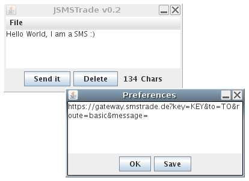
**⚠️ DEPRECATED:** This project is no longer maintained. No further updates, bug fixes, or feature additions will be made. Use at your own risk.
View on Codeberg
View on GitHub
---
76. template
- 💻 Languages: Make (89.2%), Shell (10.8%)
- 📚 Documentation: Text (100.0%)
- 📊 Commits: 23
- 📈 Lines of Code: 65
- 📄 Lines of Documentation: 232
- 🏷️ Tags: 1
- 📅 Development Period: 2013-03-22 to 2026-03-07
- 🏆 Score: 0.1 (combines recent activity, code size, tags, and release status)
- ⚖️ License: No license found
- 🧪 Status: Experimental (no releases yet)
⚠️ **Notice**: This project appears to be inactive or no longer maintained. The average age of its last 42 commits exceeds 2 years. Use at your own risk.
DEPRECATED
This project is no longer maintained. No further updates, bug fixes, or
feature additions will be made. Use at your own risk.
View on Codeberg
View on GitHub
---
77. vs-sim
- 💻 Languages: Java (98.8%), Shell (0.7%), XML (0.4%)
- 📚 Documentation: LaTeX (98.3%), Text (1.4%), Markdown (0.3%)
- 📊 Commits: 396
- 📈 Lines of Code: 16303
- 📄 Lines of Documentation: 2905
- 🏷️ Tags: 0
- 📅 Development Period: 2008-05-15 to 2026-03-07
- 🏆 Score: 0.1 (combines recent activity, code size, tags, and release status)
- ⚖️ License: Custom License
- 🧪 Status: Experimental (no releases yet)
⚠️ **Notice**: This project appears to be inactive or no longer maintained. The average age of its last 42 commits exceeds 2 years. Use at your own risk.
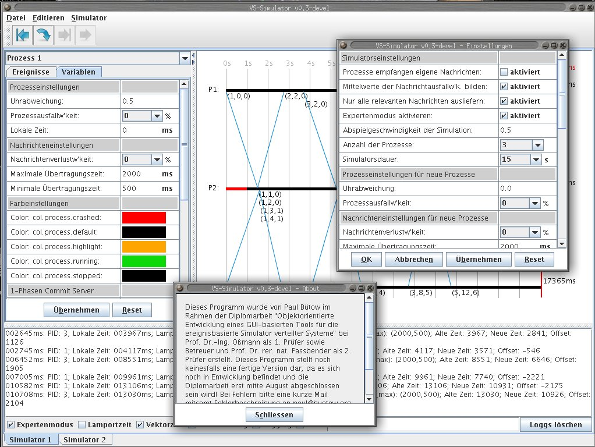
VS-Sim is an open source simulator programmed in Java for distributed systems. VS-Sim stands for "Verteilte Systeme Simulator" which is the german translation for "Distributed Sytstems Simulator".
View on Codeberg
View on GitHub
---
78. perl-poetry
- 💻 Languages: Perl (100.0%)
- 📚 Documentation: Markdown (100.0%)
- 📊 Commits: 2
- 📈 Lines of Code: 191
- 📄 Lines of Documentation: 8
- 🏷️ Tags: 0
- 📅 Development Period: 2014-03-24 to 2014-03-24
- 🏆 Score: 0.1 (combines recent activity, code size, tags, and release status)
- ⚖️ License: No license found
- 🧪 Status: Experimental (no releases yet)
⚠️ **Notice**: This project appears to be inactive or no longer maintained. The average age of its last 42 commits exceeds 2 years. Use at your own risk.
Here you find some Poetry written in Perl.
View on Codeberg
View on GitHub
---
79. fype
- 💻 Languages: C (72.1%), C/C++ (20.7%), HTML (5.7%), Make (1.5%)
- 📚 Documentation: Text (71.3%), LaTeX (28.7%)
- 📊 Commits: 83
- 📈 Lines of Code: 10196
- 📄 Lines of Documentation: 1741
- 🏷️ Tags: 0
- 📅 Development Period: 2008-05-15 to 2021-11-03
- 🏆 Score: 0.1 (combines recent activity, code size, tags, and release status)
- ⚖️ License: Custom License
- 🧪 Status: Experimental (no releases yet)
⚠️ **Notice**: This project appears to be inactive or no longer maintained. The average age of its last 42 commits exceeds 2 years. Use at your own risk.
**F**or **Y**our **P**rogram **E**xecution — a lightweight scripting language.
View on Codeberg
View on GitHub
---
80. hsbot
- 💻 Languages: Haskell (98.5%), Make (1.5%)
- 📊 Commits: 81
- 📈 Lines of Code: 601
- 🏷️ Tags: 0
- 📅 Development Period: 2009-11-22 to 2026-03-07
- 🏆 Score: 0.1 (combines recent activity, code size, tags, and release status)
- ⚖️ License: Custom License
- 🧪 Status: Experimental (no releases yet)
⚠️ **Notice**: This project appears to be inactive or no longer maintained. The average age of its last 42 commits exceeds 2 years. Use at your own risk.
This project is no longer maintained. No further updates, bug fixes, or
feature additions will be made. Use at your own risk.
View on Codeberg
View on GitHub